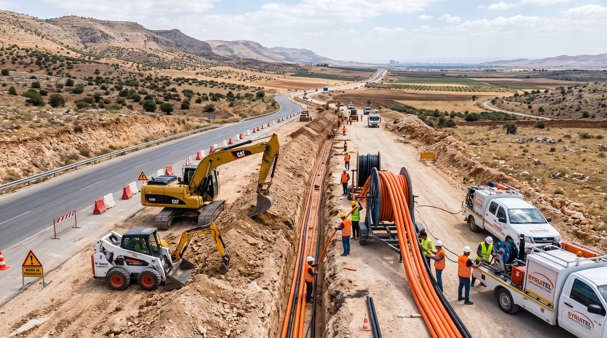
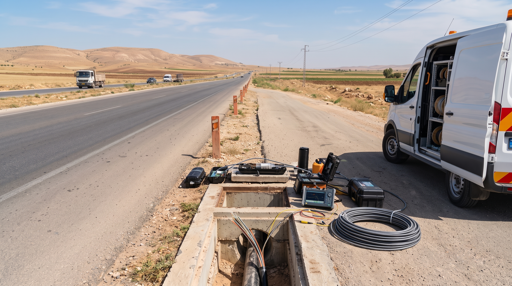
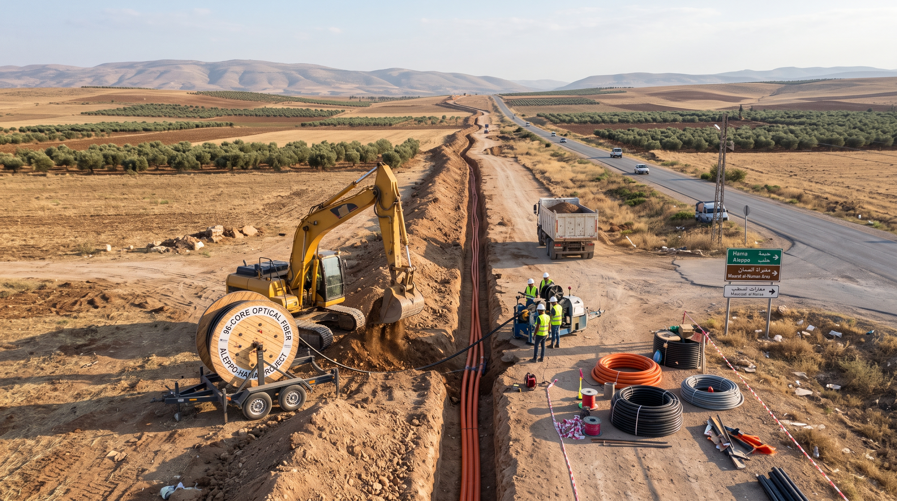
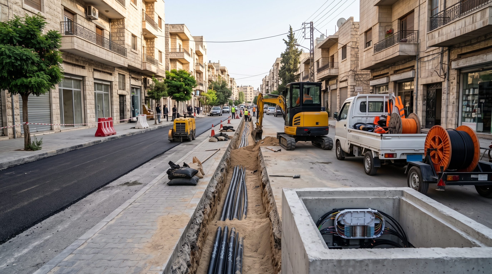

الألياف الضوئية OSP

الشبكة الفقارية الضوئية – مشروع شركة جاد
الإشراف بواسطة فريق متخصص على تنفيذ الأعمال المدنية لمسارات الشبكة الفقارية الضوئية وربط المدن والمحاور الرئيسية.
نقدم حلولاً هندسية وتنفيذية متقدمة في مسارات الألياف الضوئية، شبكات الاتصالات، ومراكز البيانات بمستويات اعتمادية تلبي متطلبات المشاريع الاستراتيجية.
ننفذ ونقدم حلولاً متكاملة لمشاريع البنية التحتية الرقمية والاتصالات، من المسح والتخطيط والأعمال المدنية إلى تنفيذ شبكات الألياف الضوئية والاختبارات والتسليم، مع خبرة فنية وقدرات تنفيذية تناسب المشاريع الكبرى والمعقدة.
حلول متكاملة لمراحل المشروع المختلفة، من التخطيط وحتى التنفيذ والتسليم.
نخبة من المشاريع الاستراتيجية والتنفيذية المنفذة في شبكات الألياف الضوئية، المسارات الفقارية، وتجهيز مراكز البيانات عالية الاعتمادية.

الإشراف بواسطة فريق متخصص على تنفيذ الأعمال المدنية لمسارات الشبكة الفقارية الضوئية وربط المدن والمحاور الرئيسية.

الإشراف بواسطة فريق فني متخصص على إعادة تأهيل وتطوير مسار كابل الألياف الضوئية الرابط بين حلب ودبسي عفنان.

الإشراف بواسطة فريق متخصص على تمديد كابلات الألياف الضوئية لربط حلب بمحافظة حماه وتعزيز البنية التحتية للاتصالات.

الإشراف بواسطة فريق متخصص على تأسيس البنية التحتية لشبكات FTTH وتمديد الألياف الضوئية لخدمة أحياء مدينة حلب.
تجهيز والإشراف بواسطة فريق فني متخصص على تنفيذ مركز بيانات المشفى الطلياني وفق المتطلبات الفنية للمشروع.
تجهيز والإشراف بواسطة فريق متخصص على تنفيذ الأعمال الفنية لمركز بيانات شركة مسالكو في عدرا.
إعداد الدراسة والتصور الفني بواسطة فريق متخصص لإنشاء مركز بيانات معمل السكر وفق متطلبات الموقع والتشغيل.
نجمع بين الفهم الهندسي المتخصص والقدرات الميدانية المؤهلة للتعامل مع متطلبات المشاريع الحيوية.
فهم عملي لمتطلبات مشاريع الاتصالات والبنية التحتية الرقمية.
من المسح والأعمال المدنية إلى تنفيذ الشبكات والاختبارات والتسليم.
قدرة على التعامل مع المشاريع الوطنية والاستراتيجية والمشاريع ذات المتطلبات الفنية المعقدة.
الالتزام بالمعايير الفنية وإجراءات السلامة وجودة التنفيذ في جميع مراحل المشروع.

البنية التحتية القوية تبدأ من التنفيذ الصحيح.
تواصل مباشرة مع مهندسي واستشاريي Iris Blue لمناقشة نطاق العمل، دراسة المخططات الفنية، وتقديم الحلول الهندسية المناسبة لمشروعك فوراً.
نمتلك الكوادر المؤهلة والآليات الهندسية التخصصية لدعم كافة مراحل البنية التحتية في مختلف المحافظات والمشاريع الكبرى.